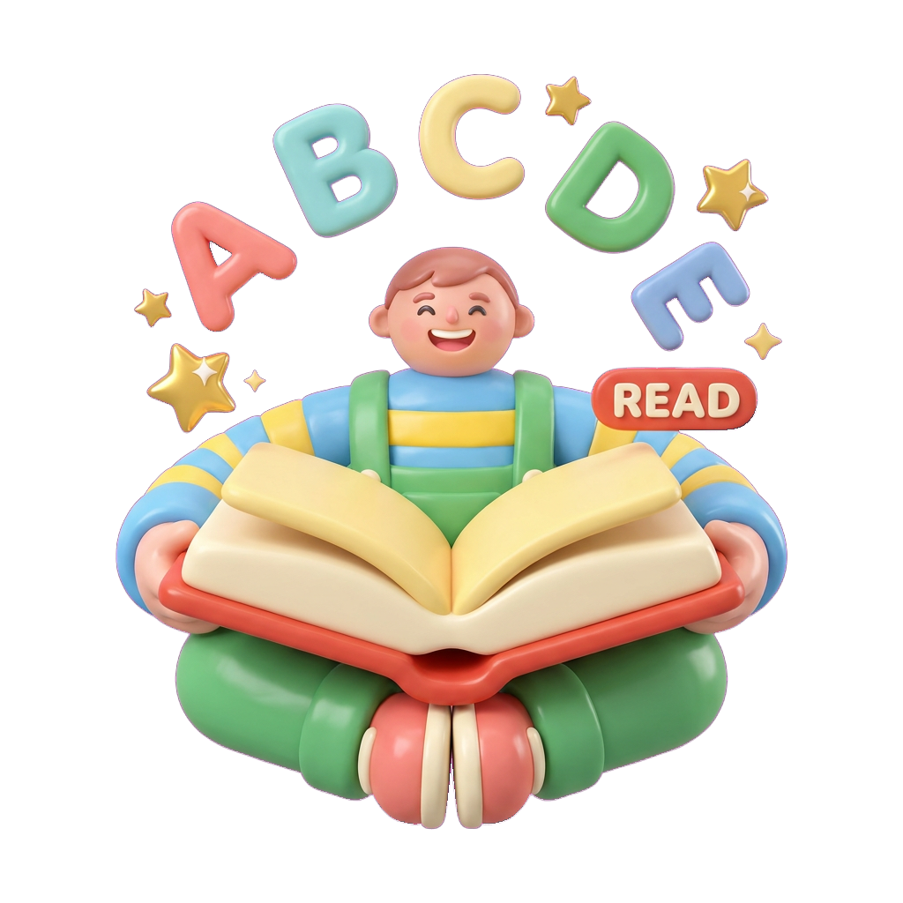

The reading crisis & how it ends
1 in 5 American adults can't really read this page.
Not the headlines. Not a medicine label, a lease, a permission slip, or a bedtime story. And for the first time in three decades, the numbers are getting worse. The good news: the place this problem starts is also the place it ends: at home, with a child, a grown-up, and a book.
What you can do tonight ↓
The numbers America doesn't talk about
Almost every adult can sign their name; that fight was won a century ago. The fight we're losing is functional literacy: reading well enough to actually use it. Here is where we stand.
adults have low literacy
About 43 million Americans struggle with everyday reading tasks.
Source: NCES / National Literacy Instituteread below a 6th-grade level
Roughly 130 million adults, ages 16–74, in a Gallup analysis for the Barbara Bush Foundation.
Source: Gallup / Barbara Bush Foundationat or below the lowest level
Adults ages 16–65 on the federal PIAAC scale, up from 19% just six years earlier.
Source: NCES, PIAAC 2023could be lost every year
The upper-bound estimate of low adult literacy's annual cost to the U.S. economy, near 10% of GDP.
Source: Gallup / Barbara Bush FoundationTwo figures, two yardsticks: the “1 in 5” comes from the federal PIAAC assessment (adults at or below its lowest level); the “54%” from Gallup's analysis of reading below a 6th-grade level. They aren't contradictory; a person can clear the lowest bar and still read far below what modern life demands.
50 years: one victory, one quiet defeat
Over the last half-century, basic literacy was all but solved, so people say “America is 99% literate.” But every time researchers measured whether adults could use reading, a bigger, more stubborn gap appeared. It held near “1 in 5 struggling” for 30 years… and then, between 2017 and 2023, it broke the wrong way.
Basic literacy was conquered. Functional literacy plateaued for three decades, and is now getting worse for the first time. The lowest readers aren't catching up; they're falling further behind.
What the federal PIAAC and NAAL data show, 1992–2023
And the slide isn't landing evenly. Between 2017 and 2023 low-literacy rates rose across nearly every group, with the steepest increases among adults who already faced the longest odds: Black and Hispanic adults, those without a high-school diploma, and those out of the workforce. The gap isn't only growing; it's concentrating. PIAAC 2023.
The leak is upstream: in today's classrooms
Adult literacy in 2040 is being set right now. The 2024 Nation's Report Card is the leading indicator, and it's flashing red: there are now more fourth-graders below the “Basic” line than at “Proficient.”
What it costs: a country and a child
💸 The nation: up to $2.2 trillion a year
A Gallup analysis for the Barbara Bush Foundation estimates low adult literacy could cost the economy as much as $2.2 trillion a year, near 10% of GDP, in foregone earnings and output. And that's before the downstream toll on health and opportunity.
👤 The person: doors that quietly close
Low literacy tracks with lower lifetime earnings, poorer health outcomes, and fewer choices, not because of ability, but because so much of adult life is gated behind the printed word: forms, contracts, instructions, ballots.
👨👩👧 The loop: it passes down
A parent's literacy is one of the strongest predictors of their child's. Left alone, the gap repeats generation to generation. Break it once, and you bend the line for everyone who comes after.
🏥 The body: harder to stay well
So much of staying healthy is reading: dosages, discharge papers, consent forms. Low health literacy is tied to an estimated $106–238 billion in extra U.S. health costs a year and to more hospital readmissions. (GWU / Milken, 2007)
Every reading level is a different paycheck
This isn't about a diploma on a wall. When researchers sort adults purely by how well they read, average income climbs at every single step. The distance between the weakest and strongest readers is about $29,000 a year, every year, for a working life.
more, over a working life
Median lifetime earnings run about $1.6M with a high-school diploma versus $2.8M with a bachelor's: roughly 75% more.
Source: Georgetown CEW, 2021the unemployment rate
Adults without a high-school diploma faced 6.2% unemployment in 2024, versus 2.5% for bachelor's-degree holders.
Source: U.S. Bureau of Labor Statistics, 2024These earnings figures track educational attainment, the closest nationwide proxy for literacy attainment, and reading is the skill that makes school, and everything gated behind it, possible.
The hardest place this shows up, and the way out
Step into an American prison and you step into a room of people whom reading failed first. It is the starkest measure of how high the stakes get, and, just as importantly, one of the clearest proofs that teaching someone to read changes a life at any age.
finished high school first
Fewer than half of people in state and federal prison held a high-school credential before they were incarcerated.
Source: NCES, Literacy Behind Bars, 2007as many learning disabilities
17% of inmates had a diagnosed learning disability, versus 6% of adults living in households.
Source: NCES, Literacy Behind Bars, 2007The lesson behind bars is the same one at the kitchen table: it is never too late to learn to read, and never too early to start. The cheapest, kindest place to win this is years earlier, in a five-year-old's very first letters.
See it and hear it, in real voices
The numbers are stark, but they land hardest when you watch them play out. These two videos, one a clear explainer, one a sobering look at young people asked to read aloud, put faces and voices to the American literacy crisis. They open on YouTube in a new tab.
These videos are the work and opinions of their creators, linked here for reference; Wobbly isn't affiliated with them and doesn't host the videos. Thumbnails are still frames from each video.
By third grade, the road forks
Through third grade, children learn to read. After it, they read to learn, and a child who hasn't crossed that bridge begins falling behind in every subject at once. It surfaces, years later, at the graduation that does, or doesn't, happen.
The highest-leverage moment
The curve bends at ages 3–8
Functional illiteracy is, overwhelmingly, a foundational-skills problem: decoding, letter–sound mapping, and letter formation so automatic it frees a child's attention to read for meaning.
Remediating an adult is expensive and rare. Building the foundation correctly in early childhood is cheap, durable, and exactly where the evidence, the “science of reading,” says the line actually moves: explicit, systematic, multi-sensory phonics and handwriting, early. The child most likely to be discouraged out of practice is the child who needs the foundation most. Catch them before they fall into the 40%.
There's already a signal this works. In the 2025 national trend data, the one age tested that gained ground in reading was the youngest, age 9, and the gains were largest among the lowest-scoring children: the very readers most at risk. Caught early, the line moves. NAEP Long-Term Trend, 2025.
A million words before kindergarten
Where does the third-grade gap begin? Long before school, in the simple act of a lap and a book. Researchers counted the words children hear from storybooks, and the distance between the read-to and the not-read-to child is almost too large to fit on a page.
books per child, in some neighborhoods
In communities of concentrated poverty, researchers counted about one age-appropriate book for every 300 children, versus 13 books per child in a middle-income neighborhood.
Source: Neuman & Celano, “book deserts”of young children read to daily
About 85% of 3-to-5-year-olds are read to a few times a week, but only around half hear a book every day, and the rate climbs with a parent's own education.
Source: NCES, Condition of EducationYou. Tonight. A book.
The single best thing you can do starts at bedtime
No app, no program, and no policy beats this: a grown-up who reads with a child, a little, every day. It's free, it takes fifteen minutes, and it is the most powerful early-literacy intervention we have. Children read to daily hear millions more words before kindergarten, the raw material of reading. So tonight, before lights-out:
- 📖 Read together every dayEven 15 minutes counts. Make it as routine as brushing teeth: same time, same cozy spot.
- 👉 Point at the wordsRun your finger under the line as you read. Children learn that print goes left-to-right and carries the story.
- 🗣️ Let them sound it outPause and let your child try the word. Wait. Celebrate the attempt, never the buzzer.
- 🔁 Re-read favoritesThe hundredth read of the same book isn't boring to them; it's fluency, building.
- ❓ Talk about it“What do you think happens next?” Turning pictures and words into conversation is comprehension, growing.
- ✏️ Trace the lettersForming letters by hand wires letter shapes to their sounds: the bridge from drawing to reading.
You don't need to be a teacher. You need a book, a lap, and a few minutes. Start tonight. Do it again tomorrow. That's how the curve bends, one child, one story at a time.

Built for that exact moment
Where Wobbly comes in
We built Wobbly to attack this problem at its single highest-leverage point: the 3–8-year-old, right as letter formation and letter–sound knowledge get wired in. Multi-sensory by design: see each stroke, trace it, hear its sound, then it teaches the foundation, not a patch. It's deliberately forgiving and positive-only, so the child who'd give up keeps going. And the foundation is what's free: letters A–E and numbers 0–3, fully featured, so cost is never the reason a family doesn't start.
Meet Wobbly →Sources & notes
- NCES: PIAAC 2023 (Cycle 2), Highlights of U.S. National Results: 28% of adults ages 16–65 at or below Level 1, up from 19% in 2017; the average U.S. score fell about 7 points (270 → 263) on the comparable trend line. See also AIR: Highlights From the U.S. PIAAC Cycle 2 Results.
- NCES: Adult Literacy in the United States (NCES 2019-179, PIAAC Cycle 1): 21% of adults (43.0 million) have low literacy skills.
- Barbara Bush Foundation / Gallup: New Economic Study (2020): 54% of adults (ages 16–74, ≈130 million) read below a 6th-grade level; low adult literacy could cost the U.S. up to $2.2 trillion annually.
- The Nation's Report Card (NAEP): 2024 Reading, Grade 4 National Trends; National Assessment Governing Board: 2025 release: ~40% of 4th-graders below Basic (largest since 2002); ~31% at or above Proficient.
- The Nation's Report Card (NAEP): 2025 Long-Term Trend, reading at ages 9 and 13: age-9 reading rose about 4 points from its 2022 low, with the largest gains among lower-performing students; age-13 reading showed no significant change and remained below pre-pandemic levels.
- NCES: NAAL: 120 Years of Literacy and 2003 NAAL Commissioner's Remarks: 14% “Below Basic” prose in 1992 and again in 2003 (unchanged). Earliest functional-literacy signal: the 1975 Adult Performance Level study.
- Georgetown University Center on Education and the Workforce: The College Payoff (2021): median lifetime earnings of about $1.6 million with a high-school diploma versus $2.8 million with a bachelor's degree (≈75% more). The report stresses wide overlap between groups.
- U.S. Bureau of Labor Statistics: Education pays (Current Population Survey, 2024): 6.2% unemployment and $738 median weekly earnings for workers without a high-school diploma, versus 2.5% and $1,543 for bachelor's-degree holders. Figures reflect educational attainment and refresh annually.
- Annie E. Casey Foundation: Donald J. Hernandez, Double Jeopardy: How Third-Grade Reading Skills and Poverty Influence High School Graduation (2011), a longitudinal study of 3,975 students: those not reading proficiently by the end of 3rd grade were 4× more likely not to graduate on time (≈16% vs. ~4%), rising toward 1 in 3 for children also living in poverty (full report).
- Ohio State University: Logan, Justice, Yumus & Chaparro-Moreno, “When Children Are Not Read to at Home: The Million Word Gap”, Journal of Developmental & Behavioral Pediatrics (2019): a child read five books a day hears ≈1,483,300 words from books before kindergarten, about 1.4 million more than a child never read to.
- Neuman & Celano, “Access to Print in Low-Income and Middle-Income Communities,” Reading Research Quarterly (2001); extended by Neuman & Moland, “Book Deserts” (NYU, 2019): roughly one age-appropriate book per 300 children in concentrated-poverty communities versus 13 per child in middle-income ones.
- NCES: Literacy Behind Bars: Results From the 2003 National Assessment of Adult Literacy Prison Survey (NCES 2007-473): prison inmates scored well below the household population on all three literacy scales; 17% had a diagnosed learning disability (vs. 6% of household adults); 43% held a high-school credential before incarceration.
- RAND Corporation: Evaluating the Effectiveness of Correctional Education: A Meta-Analysis (2013), funded by the U.S. Department of Justice: participation in correctional education was associated with 43% lower odds of recidivating, 13% higher odds of post-release employment, and an estimated $4–$5 saved per $1 spent (DOJ release).
- Vernon, Trujillo, Rosenbaum & DeBuono, Low Health Literacy: Implications for National Health Policy (George Washington University / Milken Institute School of Public Health, 2007): low health literacy associated with an estimated $106–238 billion in additional U.S. health-care costs each year, and with higher hospital readmission rates.
- NCES: Home Literacy Activities (Condition of Education), National Household Education Surveys (2019): 85% of children ages 3–5 were read to by a family member three or more times in the past week; 91% among children whose mothers held a bachelor's degree.
A note on method: literacy figures shift with the instrument and definition used (self-reported vs. assessed, “basic” vs. “functional,” differing cut-points and age ranges). The 50-year comparison above is directional, not exact; the federal PIAAC and NAAL/NALS series are the most internally comparable and are weighted accordingly. Every figure on this page is attributed to a named federal statistics agency, university research center, or major literacy foundation. We've deliberately left out several widely repeated but poorly sourced claims (for example, that states plan prison space from third-grade reading scores, which fact-checkers have rated false).